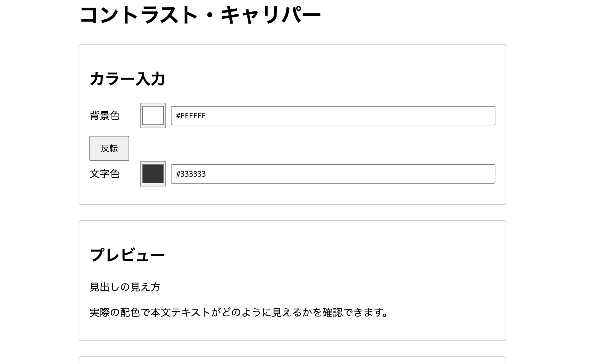

2026 / 個人制作
Contrast Caliper
色の組み合わせが読みやすいかを、 WCAG基準で判定するツール。
About
担当
企画・設計・デザイン・実装
技術
HTML / CSS / JavaScript
制作期間
2026年8月〜9月
Screen

作った理由
文字と背景の色が読みにくいサイトは、まだ多くあります。 そこで、色の組み合わせを簡単に確認できる チェッカーを作りました。
こだわったこと
01. 結果がすぐ見える
色を入力すると、コントラスト比と 合否がすぐに表示されます。
02. 基準を明確にする
WCAGの基準を使って、 色の組み合わせを判定します。
03. 考え方を残す
ワイヤーフレームやフローチャートを作り、 どのように設計したのかを残しました。
難しかったこと
相対輝度やコントラスト比の計算を理解するのに 時間がかかりました。 JavaScriptで計算する仕組みを調べながら実装しました。